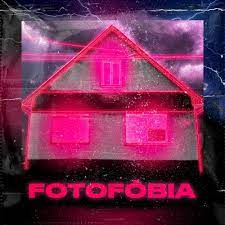
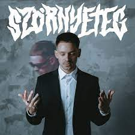

"Mire vágysz? Én már mindent elértem"
"Én nem hagyom, hogy visszahúzzon, amit egyszer lelöktem"
Dzsúdló - Spanom
"Mire vágysz? Én már mindent elértem"
"Én nem hagyom, hogy visszahúzzon, amit egyszer lelöktem"
Dzsúdló - Spanom
Juhász Márton, művésznevén Dzsúdló 1998. szeptember 29-én született Miskolcon. Jelenleg pop/trap előadó, dalszövegíró. A köztudatba 2019-ben robbant be szókimondó, önreflexív dalaival. Mezőzomboron, egy borsodi faluban nevelkedett, vallásos családban, édesanyja hitoktató, nagymamája sekrestyés, nagypapája pedig kántor volt. Már általános iskolában elkezdett foglalkozni az énekléssel, később pedig a Miskolci Zrínyi Ilona Gimnázium dráma tagozatára járt, ahol Young Majréval (Maier Péterrel) zenélt, és akkoriban alapítottak is egy indie rockbandát. Falunapokra is jártak előadni, és még saját próbatermük is volt, ahol tudtak gyakorolni. Juhász Márton nem ismeretlen a slam poetryben jártasaknak. 2017-ben Maier Péter és Juhász (Munkatársak nevű formáció) nyerte az 5. Team Slam Országos Bajnokságot. Ebből alakult meg a sideprojektjük, a The Coworkers, amihez Pintér Kristóf “Signo” csatlakozott mint dobos-basszeros.
Dzsúdló vezetékneve Juhász, és emiatt sokszor Dzsú-nak becézték őt. Egyszer az egyik barátja, véletlenül Dzsúdlónak hívta (vélhetően Jude Law angol színészre gondolt), Mártonnak pedig ez a név nagyon megtetszett, és azóta ezt használja a színpadon.
Dzsúdló 2019-ben a barátaival elkezdte a Holdudvar projektet. A banda egy 12 tagból álló kollektíva, és főként rapperekből, producerekből áll. Létrejöttét egy szerencsés véletlen okozta, mivel a társaságban sokan ráeszméltek arra, hogy mennyien szeretnek zenélni, és a tagok közül mindenki kedvelte a Brockhamptont, egy ehhez hasonló hiphop kollektívát szerettek volna létrehozni.
Dzsúdló a szülinapjára kapott egy beatet két Holdudvar tagtól, és írt is egy szöveget a zenealaphoz. A szám az Unom címet kapta, és fél év kellett ahhoz, hogy kiadják, mivel sok elvárása volt Mártonnak. Többek között szeretett volna egy rúdtáncost a kliphez és lámpaparkot is, ez okozta a dal késői kiadását. Később megjelent a Hiszti a Minden és a Lej című száma is, a daloknak köszönhetően Dzsúdló egyre ismertebb előadóvá kezdett válni Magyarországon.
Dzsúdló első albuma 2020 áprilisában jelent meg, a Fotofóbia nevet kapta, és 10 szám található rajta. A legnépszerűbb szám a lemezen a Lil Frakkal közös Lej, a zene többmilliós nézettséget produkált a YouTube-on. Az album szűk egy év alatt több mint 700 ezer streamet ért el Spotify-on, és Magyarország egyik legtöbbet hallgatott előadójává emelte az énekest. Dzsúdló az albumon a felnőtté válását szeretné bemutatni, és a fiatalkortól való elszakadást. A zenék szövegeiben minden olyan problémáról hallhatunk, amit egy átlagos tinédzser/fiatal megél, beleértve a depressziót, szorongást és a szerelmi csalódásokat.
A pandémia miatt a lemezdebütáló koncertek minimális mennyiségűre csökkentek, de Dzsúdlónak mégis sikerült egy dupla sold out koncertet letudnia az Akvárium Nagy Hallban.
2020 szeptemberében megjelent Ennyi című dala, amely egy új fejezetet nyitott a zenész történetében, ezt követte a novemberben megjelenő Para, amely az előadó egy bevállalósabb oldalát mutatta meg. A díjak és az elismerések mellett folyamatosan új számokon dolgozott, második albuma 2021 júliusában jelent meg, a Szörnyeteg[2] nevet viseli, 10 szám található rajta. A Dzsúdló középpontjában épp az van, ami a korábbi formációkban háttérbe szorult: a szöveg. A frappáns, önreflexív dalszövegeken és Schmidt Gergő, azaz Tembo zenei alapjain keresztül születik meg az egyedi rap-trap-pop stílusötvözet, ami a Dzsúdlót jellemzi, habár egy interjúban elmondta, hogy nem tekint magára rapperként.
| Fotofóbia 2020 | Szörnyeteg 2021 |
|  |  |